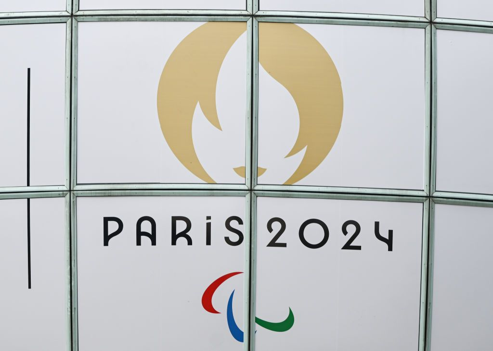
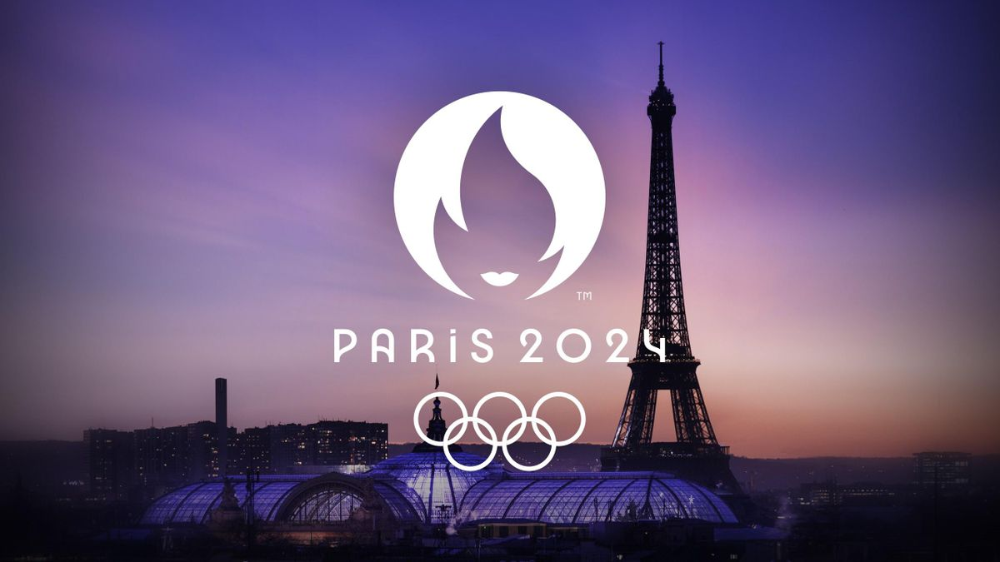
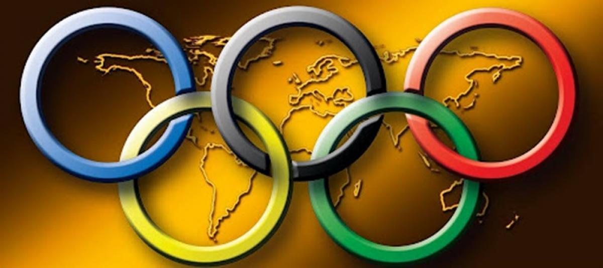
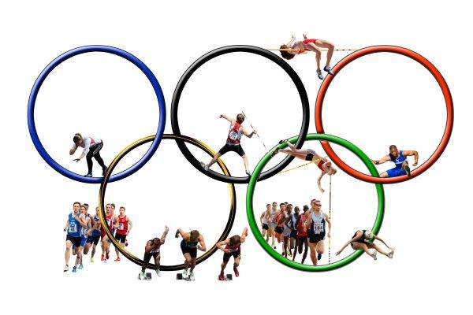

Jocurile Olimpice de la Paris programează pe 1 august întreceri la 24 de discipline sportive, cu finale la atletism, canotaj, gimnastică artistică, înot, judo, kaiac-canoe slalom, scrimă, tir sportiv şi yachting.
| sporturi | inot | atletism | canotaj | gimnastica artistica |
|---|---|---|---|---|
| 8-9 | Japonia - Germania | Australia - Canada | Franţa - Nigeria | Belgia - SUA |
| imagini |  |  |  |  |